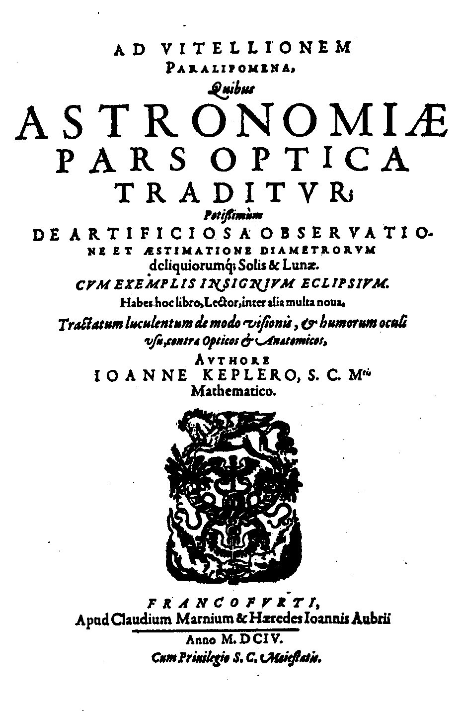

 |
Supplements to"Why Red Doesn't Sound Like a Bell: Understanding the Feel of Consciousness"by J. Kevin O'ReganThese are sections that were left out of the final version of the book. Please send me an email if you have comments or corrections.Light and the eyeA simple account of what light is, how it propagates, what images are and are not, how lenses work, how the eye works, and how it compares to a camera.Ancient VisionsHow people thought about light and the eye in ancient times. Everything needed to understand vision was known at the time of Euclid, 400 years before Christ, or certainly at the time of Ptolemy in the second century AD, but it was only fifteen hundred years later that an adequate theory of light and vision finally emerged. Why? One factor was probably that four of the most respected thinkers of western civilization: Plato, Aristotle, Euclid and Galen, had all opted, in their own different ways, for incorrect theories of vision.Experiments with Fire in the Eyes: intimate retinal contactThe fact that in some situations human and animal eyes seem to gleam in the dark was one argument for the ancient idea that light was emitted by the eye. This section shows why "red-eye" occurs, and how you can even obtain "white-eye" in special circumstances. It explains why when you see the blackness of another person's pupil, you are actually looking at the light coming from inside your own eyes!The glacial sphereNotes on why from antiquity to the middle ages, the cristalline lens in the eye was thought to lie in the center of the eye and be spherical in shape, thereby preventing the realization that it acted as a lens to focus light; Also some notes on cataract and its treatment in antiquity, on dissection, and on Vesalius, the great 16th Century anatomist who also propagated the error about the glacial sphere being at the center of the eye.Experiments with the camera obscuraSome simple experiments you can do to convince yourself of the difficulty of understanding the action of light going through holes. Why do the light patches under trees look round? How to make your own pinhole camera. Giovanni Battista Della Porta's great secret.Are we living slightly in the past?I discuss various twisted issues that arise if you take the classical view of perception. It takes a few tens of milliseconds for sensory information from our sensors to reach the brain. Does this mean that actually things we perceive are perceived a little bit late? This seemed incredible to scientists at the end of the 19th Century. Why do we feel on the skin and not in the brain where the nerve impulses arrive? Why do we see things outside of us instead of feeling them on our retinas where they stimulate the photoreceptors.Discovery of the image at the back of the eyeHow at the turn of the 17th Century, the astronomer Johannes Kepler came to be interested in the functioning of the eye, and how he realized that the "glacial sphere" was actually a lens that focussed an "image" ( a new concept at the time) at the back of the eye.The inverted retinal imageHow Kepler, Leonardo, Descartes and many others grappled with the problem of why we see right side up despite the fact that the image at the back of the eye is upside down.The imperfect eyeThe anatomy of the horseshoe crab's simple eye as compared to the inverted eye of vertebrates. There is a discussion of the "decussation" (i.e. the crossed-over way vertebrate eyes are connected to their brains) and a description of Polya's speculations about the reason for this.Experiments with the blindspot and filling inHow to draw out your blind spot as well as the blood vessels that obscure vision; experiments to determine the I.Q. of your filling in mechanism.The failed fusion experimentsThe somewhat amusing saga of experiments I performed to test the idea that there is a "composite image" in the brain that represents the outside world.How the new view deals with filling in and geometric distortionsSome extra notes on what look like they are neural filling in mechanisms are not really filling in mechanisms. And a note on how the new view deals with geometric distortions and cortical magnification of the retinal image.Make your own change blindness demonstrationUsing office presentation software.The problem of natural language comprehensionSome examples showing the difficulty of making machines that understand language.Current research in autonomous and developmental roboticsSome additional examples.Current research on the selfAdditional material on research on the self in humans and robots.The sensorimotor approach to colorAn expanded version of the chapter in the book.Conscious experience in babies, animals and machinesAn expanded version of the section in the book, with some ethical considerations. |